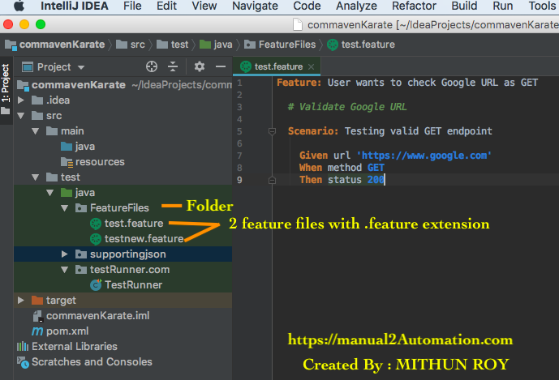

What Is Feature File?
A Feature File is starting point to the Karate tests. This is a file where we will describe our tests in Descriptive language. Every feature file should have dot feature extension.As an example => "filename.feature".
Feature File Folder Structure :
Below screenshot shows Karate Feature File Structure :
FeatureFiles== Where we keep all feature files.
test.feature , testnew.feature == 2 sample feature files.
# All feature files in Karate should have the extension .feature in its name.
If .feature is not present, then Karate won’t recognize it as a feature file.
# We need to add a keyword called Feature. Without this, you will see compile errors in your script.
# Each scenario in a feature file should also start with a keyword called Scenario.
A single feature file can have multiple scenarios.
# Scenarios are written starting with - Given , When ,
Then etc.

How to create a new Feature File??
Right click on FeatureFiles folder --> New --> File --> Give file name as testing1.feature.[You can give any file name but should have .feature extension]
Sample Feature File
As per above feature file scenario , we are hitting a GET request taking GOOGLE. If it is success then returns response code as 200 and Google home page as HTML response.